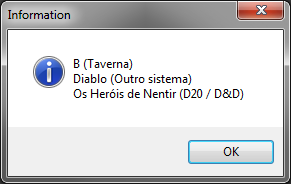

Objeto Mesa
Objeto Mesa
Este objeto representa uma mesa aberta no Firecast.
Herança
O Objeto Mesa possui todas as características de um WrappedObject. Veja:
Características
Além das características herdadas, o Objeto Mesa também possui as seguintes características:
Propriedades e atributos
| Propriedade | Tipo | Descrição |
|---|---|---|
| codigoInterno | Integer | Somente leitura, contém o código interno da mesa que é usado para identificá-la unicamente em todo o RRPG Firecast. |
| nome | String | Somente leitura, contém o nome da mesa. |
| msgStatus | String | Somente leitura, contém a mensagem de status da mesa. |
| site | String | Somente leitura, contém o endereço do site da mesa. |
| logotipo | String | Somente leitura, contém a URL da imagem logotipo da mesa. |
| sistema | String | Somente leitura, contém o sistema de RPG da mesa. |
| msgBoasVindas | String | Somente leitura, contém o texto da mensagem de boas vindas da mesa. |
| isRestrito18Anos | Boolean | Somente leitura, contém true se a mesa estiver marcada como não recomendada para menores de 18 anos. |
| haVagas | Boolean | Somente leitura, contém true se a mesa estiver marcada como há vagas. |
| isModerada | Boolean | Somente leitura, contém true se a mesa estiver marcada como Moderada. |
| podeTablesDock | Boolean | Somente leitura, contém true se a mesa pode exibir Table's Dock do usuário. É true quando o criador da mesa é Gold Plus ou quando o usuário local é assinante Gold. |
| jogadores | Arranjo de Objeto Jogador | Somente leitura, contém um arranjo de Objeto Jogador representando todos os usuários que estão conectados na mesa no momento. Um arranjo é uma tabela lua indexada de 1 a N, onde N é o comprimento da tabela (operador # no lua) |
| meuJogador | Objeto Jogador | Somente leitura, contém o Objeto Jogador do usuário que está usando o RRPG. |
| biblioteca | Objeto BibliotecaItem | Somente leitura, contém o objeto BibliotecaItem raiz da biblioteca da mesa. A raiz da biblioteca é aquela pasta que tem no topo da mesma, de nome "Biblioteca". |
| chat | Objeto Chat | Somente leitura, contém o Objeto Chat da interface de bate papo principal da mesa. |
| activeChat | Objeto Chat | Somente leitura, contém o Objeto Chat da mesa que está atualmente ativo/focado na interface. |
Métodos
| Método | Descrição |
|---|---|
| mesa:isType(typeName) | Retorna true se passado "mesa" como parâmetro. |
| mesa:findBibliotecaItem(codigoInterno) | Dado um número código interno, localiza o objeto BibliotecaItem que possui "codigoInterno" igual ao valor passado no parâmetro "codigoInterno". Retorna um objeto BibliotecaItem ou nil caso não encontre. |
| mesa:findJogador(loginOuCodigoInterno) | Dado um login de usuário ou seu código interno, localiza o objeto Jogador correspondente representando o jogador atualmente na mesa. Retorna um objeto Jogador ou nil caso não encontre. Observação: A função retorna nil se o usuário não estiver na mesa no momento, mesmo quando o parâmetro passado for um login ou um código interno válido. |
| mesa:requestSetModerada(moderada) | Requisita a ativação/desativação da mesa moderada. Parâmetros: moderada - Booleano, onde true significa "Ativar a mesa moderada" e false "Desativar a mesa moderada". Observações: A alteração do comportamento "mesa moderada" só ocorre após o servidor RRPG aprovar a mudança. |
| mesa:abrirNDBDeMesa(nome, callback[, opcoes]) | Abre um NodeDatabase da mesa que está fisicamente armazenado no servidor do Firecast. Parâmetros: nome - Cadeia de caracteres que identifica qual NodeDatabase remoto da mesa deve ser aberto. callback - Uma função que será invocada quando o NodeDatabase for carregado ou quando ocorrer um erro no carregamento. Quando o carregamento for bem sucedido, a função callback será chamada contendo o Objeto Nodo raiz do NodeDatabase no primeiro parâmetro. Quando ocorrer algum erro no carregamento, a função callback será chamada contendo nil no primeiro parâmetro. (OPCIONAL) opcoes - Uma tabela lua contendo as seguintes opções extras de carregamento do nodedatabase: (OPCIONAL) criar - Um booleano que define o que fazer quando o NodeDatabase não existir no servidor. true = criar o nodeDatabase quando não existir, false = falhar (invocar a função callback com valor nil) quando o nodeDatabase não existir. Padrão se não informado: false. (OPCIONAL) callbackDeCarga - Uma função que será invocada quando os dados do NodeDatabase começarem a ser carregados pela internet. Se você abrir duas vezes o mesmo NodeDatabase de mesa, a segunda vez não ocorrerá uma carga de dados pela internet pois o NDB já está carregado. Observações: Esta função é assíncrona, isto é, o código LUA continua sua execução normal enquanto o NDB é carregado em segundo plano. É preciso informar o parâmetro "callback" para obter o NodeDatabase carregado. Cada mesa possui seu próprio conjunto de NodeDatabases que existem independentemente das outras mesas. Alterações feitas no NodeDatabase aberto por esta função são automaticamente sincronizadas com os outros usuários que também abriram o mesmo NodeDatabase. Se o usuário sair da mesa, o NodeDatabase terá sua conexão cortada e não mais sincronizará as alterações. Por padrão, os usuários com o modo +mestre podem ler e alterar o NodeDatabase de mesa enquanto os demais usuários podem apenas ler valores. Para abrir um NodeDatabase de mesa, uma das seguintes afirmativas deve ser verdadeira: O usuário atual é assinante Gold; ou O criador da mesa é assinante Platinum. |
| mesa:asyncOpenUserRoomNDB(name[, options]) | Asynchronously open a per user NodeDatabase in this room that is physically stored in the Firecast server. Arguments: name - A string identifying which remote user NodeDatabase in this room should be opened (OPTIONAL) options - A Lua table describing additional settings that may contain: create - a boolean. If true, the NodeDatabase can be created if it does not exist. Default: false skipLoad - a boolean. If true, the returned Promise will be resolved before the load process is finished. If true, you will receive a “Loading node” instead of a “Loaded node”. Default: false Return: a Promise of a Node Object. As default behavior, the Promise will be resolved after all data is downloaded and available to be used. Remarks: The content of NodeDatabases opened by this function is stored separately per-user and per-room. Each user in the room will have their own copy of the NodeDatabase identified by the “name”. Example: local promise = room:asyncOpenUserRoomNDB("exampleNodeDatabase", {create=true}); promise:thenDo( function(node) -- This function will be called when/if the * -- load completes. The first argument, * -- "node", contains the root node of the -- opened nodedatabase end, function(errorMsg) -- This function will be called when/if the * -- load fails. The first argument, * -- "errorMsg", contains the message explaining * -- why it was not possible to open the -- nodeDatabase* end); |
Exemplos
Exemplo 1 - Exibindo uma mensagem com o nome e sistema de todas as mesas que o usuário está dentro.
| local mesas = rrpg.getMesas(); local msg = ""; for i = 1, #mesas, 1 do local objMesa = mesas[i]; msg = msg .. objMesa.nome .. " (" .. objMesa.sistema .. ")\n"; end; if msg ~= "" then showMessage(msg); else showMessage("O usuário não está em nenhuma mesa"); end; |
|---|
\

Created with the Personal Edition of HelpNDoc: Easily create Qt Help files